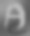
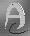
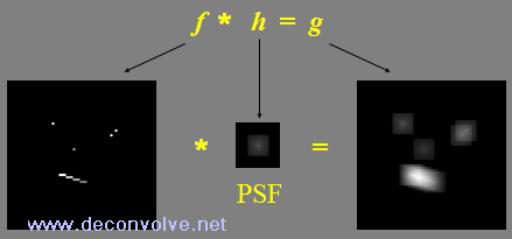

Deconvolve .Net
Free Software and Information
|
 |
 |
 |
|

|
This site enables you to:
- Download free software - powerful 64-bit deconvolution software in the BiaQIm image processing suite (BIPS). Cross platofrm and open source. Written in C woth Open MP support for multi-CPU processing.
- Learn about deconvolution - a restoration process useful in astronomy, microscopy, photography, forensics, spectroscopy and other areas.
- Download practical demos - example images and batch files to show you how to use the software.
What is Deconvolution?
Deconvolution is a process designed to remove certain degradations from signals e.g. to remove blurring from a photograph that was originally taken with the wrong focus (or with camera shake). The ability to re-focus a blurred image after it has been taken (using computational means) can be extremely useful e.g. for forensic analysis of CCTV footage or in other situations where you cannot easily go back and take the picture again. The following paragraphs give a brief overview of the subject with some key words linked to Wikipedia articles
Signals may be 1-dimensional (e.g. infrared spectra or sound waveforms), 2-dimensional (e.g. digital images), 3-dimensional (e.g. microscope through-focus volumes or 'Z-stacks'), or higher dimensional signals (e.g. a series of 3D volumes taken at sequential time points). The types of degradations that deconvolution aims to reverse are specifically those which may be described by a mathematical process called convolution. There are other types of degradations but deconvolution cannot help with those. However, convolutional degradations describe many of the degradations we meet in practice such as out-of-focus blurring, motion blur (e.g. camera shake), diffraction blur and many others. Processes designed to remove degradations from signals in general (not just convolutional degradations) are called 'restoration' processes. Deconvolution is thus a specific example of a restoration process. When dealing with digital images we speak of image restoration or, the more specific, image deconvolution. As deconvolution is a process that tries to find the state of a signal before some degradation occurred, starting from the degraded signal, deconvolution can be categorised as a solution to an inverse problem and the mathematics of inverse problems are relevant to understanding and devising deconvolution algorithms.
|
An example of image deconvolution is seen in the figure at the top of this page. On the left is a blurred version of a 'test card' image made by embellishing a stylised letter 'A' with some dots, lines and highlights and with a variable grey background. This original testcard is shown here on the right.
|
|
Now, if you refer back to the top of this page, the image on the right is the result of applying a deconvolution algorithm to the blurred image and shows that much of the fine detail of the test card has been restored. Note also that there are some speckles in the restored image not seen in the original test card. This is an example of deconvolution artefacts that are an unwanted 'side-effect' of deconvolution. For more details on this example visit the 'Results' page of www.Bialith.com where you can see an animation of the deconvolution process and learn more about deconvolution artefacts and how to minimise them. Further examples will also be given as you explore the results shown in this website. Now for some information about convolution.
Convolution and the Point Spread Function (PSF)
Given that deconvolution 'undoes' convolution, we need to understand what convolution is if we are to fully understand deconvolution. Convolution is a process that 'mixes-up' two signals is a specific way. In essence, every point in signal 1 (call this f) is converted into a copy of signal 2 (call this h). Each such copy has overall integrated intensity equal to the intensity of the single point in f from which it was made. All these copies are then superimposed onto each other to create the resulting convolved signal (g - see the figure below). The process of convolution is often represented by an asterisk (*).

This is why convolution is sometimes also known as the superposition integral and deconvolution is sometimes also called signal separation. Given this description, h is conventionally called the point spread function (or PSF) because it determines how each and every point in f is 'spread out' into a copy of the PSF. However, convolution is commutative - this means that f can just as correctly be described as the PSF w.r.t. h (so f*h=h*f). Convolution is thus a very specific and relatively simple mathematical process and, as such, it is quite remarkable that so many natural degradations can be described by this same process.
In the above description of the convolution process (and in the figure) it was assumed that the same PSF is used at all points in f. This is often the case in theoretical examples and is called spatially invariant PSF convolution. However, in most real-world examples, the PSF changes (often gradually) with position in f so the degraded image is the result of a spatially variant PSF convolution. There are correspondingly different types of deconvolution algorithm that may be used to recover the unconvolved image.
Subtypes of Deconvolution
If the PSF is known in advance, non-blind deconvolution processes may be used and these can be further subdivided into spatially invariant and spatially variant types of deconvolution according to whether the PSF is the same throughout or not. In these circumstances (with regards to image deconvolution) you start with the blurred image and known PSF (or PSFs if spatially variant) and try to calculate the un-blurred image from them.
If the PSF is not known in advance then one needs to use a different class of deconvolution algorithms known as blind deconvolution (or blind source separation) and these also have spatially variant or invariant subtypes depending on the convolution model. Blind deconvolution is a harder inverse problem as all you have to go on is the blurred image and from that you must work out the unblurred image. This would be impossible if you did not have additional information about the convolution to provide constraints on the solution. In fact, constraints are often necessary even for non-blind deconvolution as often no unique solution exists, even in the absence of noise and more so in its presence.
Finally, you may only partially know the PSF (you may have some initial estimate that may have been derived by measurements, for example). Under these circumstances you can use methods known as myopic deconvolution which aim to refine both the estimate of the unconvolved image and the estimate of the PSF at the same time.
Deconvolution Software
This site offers free and open source deconvolution software called the BiaQIm image processing suite or 'BIPS'. However, there are already many software packages that provide some kind of deconvolution facility so how can you choose between them? Commercial software is often expensive but comes with warranty, support, detailed user manuals (and maybe company representatives giving demos on site or courses on use) and a whole graphical user environment designed to help manage image data or control hardware systems that generate the images. Such software usually offers non-blind spatially invariant deconvolution (at the time of writing - 25.3.2024 - I know of only one example that offers a blind option and one other that offirs limited spatial variance in the PSF). The less expensive commercial solutions are usually more restricted in their abilities or support. Free deconvolution software (such as the BIPS) can be more flexible, i.e. can have more deconvolution options, than commercial software but is usually less well supported. However, one of the major limitations of commercial software, apart from the expense, is that much of it is closed source and so is effectively 'black box' software which can be seen as a significant limitation for its use in open transparent and reproducible scientific work.
The BIPS offers a wide variety of deconvolution algorithms, many of which can be used with advanced acceleration techniques, and which are available in native 64 bit and multi-core parallel processor capable executables. Perhaps even more importantly, the BIPS isopen source so the source code is also available. There is no secret about how it works - in every minute detail - so it is not 'black box' software and therefore is more suitable for transparent scientific work and peer-reviewed publications as well as being customisable).
Furthermore the BIPS software allows for blind deconvolution (via a number of different methods) and even for arbitrarily spatially variant PSF deconvolution - something which, at the time of writing, I am not aware that any commercial solution offers.
The BiaQIm image processing suite also comes with user manuals including step-by-step demonstration guides and the demos downloadable from this site enable you to see just how to use the software in various situations. To see example results obtained with this software just click on the links in the main menu of this website for 1D, 2D and 3D deconvolution. On the 'down-side' the free deconvolution software offerred here is mainly command-line driven (although a limited GUI interface is provided) and this is experimental software written by an individual scientist with many years of experience in the field but not by a team of professional programmers, so does not come with any warranties. There is also no techincal helpline or product support beyond the manuals and demos already provided.
Convolution and Deconvolution can Perform the Same Function
In the above descriptions of deconvolution and convolution, I referred to convolution as producing degradations and deconvolution as the process that removes these degradations. However, it is not true that convolution always results in degradation of a signal or that it always results in blurring of some kind. In fact, with the 'right' PSF, convolution can result is sharpening of an image and a simple convolution (with the appropriate PSF, called an inverse filter) can even result in a deconvolution of a previous degradation. Thus convolution and deconvolution can, in certain circumstances, be the same procedure.
|